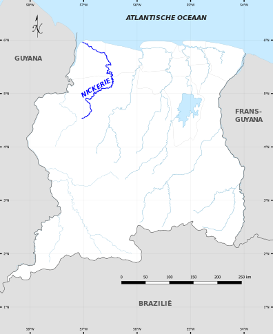
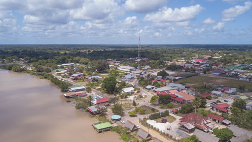

The Nickerie River
The northern part of the Courantyne makes up the west border of Suriname on the eastside and Guyana on the west side. The northern river leads into the ocean and is considered the end half of the river leading into the Atlantic. Boat traffic and fishing are prominent in this region but are heavily licensed as territorial disputes leading into 2007 with Guyana as to authority of the river lead to a highly bureaucratized and monitored river. This northern half is considered safe and the Nieuw Nickeri is the third most populated city in the country, at the end of the northern part of the river lies Apoera, a very small town of less wealthy means.
 A map view of the Nickerie RiverThe region is home to colorful homes and tourist guided opportunities as many wildlife experts visit the region demi-annually. Roads and rental vehicles are readily available. Not to mention English is commonly spoken here as well as Spanish, Dutch, and Tongo. Two of which are the most common languages of the world meaning most tourists would be able to speak their native language most of the time here.
 An overlook of homes near the actual river